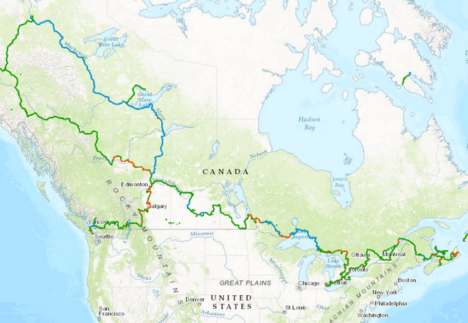
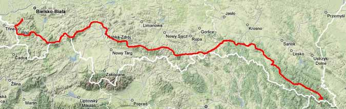
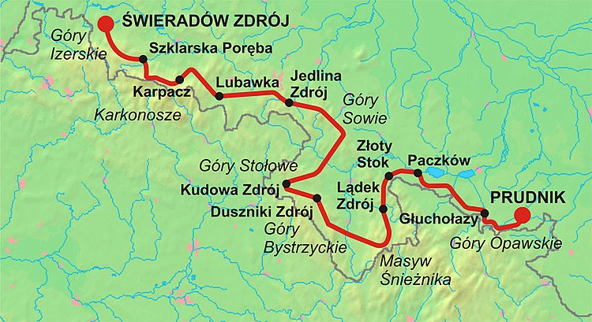

Szlaki długodystansowe
Najkrótsze szlaki, które można określić jako długodystansowe mają długość znacznie poniżej 500km, natomiast te najdłuższe nawet 24 000km!Ameryka
Ameryka, zarówno północna jak i południowa kojarzą się z dużą przestrzenią i nie bez powodu. Możemy tu bowiem znaleźć naprawdę sporo tras dla zapalonych wędrowców.Trans Canada Trial
źródło
Jest to chyba najdłuższy szlak na świecie liczy on 24 000km, czyli ponad 14 900mil. Łączy on wszystkie prowincje Kanady, więcej o nim można dowiedzieć się na stronie: tctrial.ca
Appalachian Trial
(USA) Nie jest to szlak tak długi jak ten przedstawiony powyżej, bo ma "zaledwie" 3 520km. Jest to jednak najpopularniejszy szlak długodystansowy w Ameryce Północnej, rocznie przechodzi go ponad 2 500 osób. Appalachy przez, które prowadzi nie są wysokie(najwyższy szczyt ma 2037m n.p.m.) jednak przejście całego szlaku to około 140 kilometrów przewyższenia. www.appalachiantrail.orgEuropa
Grand Italian Trial
Jest to szlak prowadzący z miasta Triest i prowadzi przez Półwysep Apeniński aż do Sycyli, gdzie trzeba skożystać z promu na Sardynię. Swoją długością dorównuje szlakom z Ameryki, mierzy on bowiem ponad 6 000km.GR 20
Ten szlak zdecydowanie należy do najtrudniejszych w Europie. Jego długość nijak ma się do szlaków z Ameryki, jednak nadrabia trundościami technicznymi. Na długości 200km mamy do podejścia 10 000 metrów.Alpine Pass Route
Alpine Pass Route jest to szlak szwajcarski prowadzący przez Alpy. Liczy on 354km i prawie 20 000 metrów przewyższenia.Szlaki EuroVelo
Na koniec tej części trudno nie wspomnieć o szlakach EuroVelo. Są to szlaki rowerowe ale nic nie stoi na przeszkodzie aby pokonać je pieszo.Polska
Główny Szlak Beskidzki
GSB prowadzi od Ustronia w Beskidzie Śląskim do Wołosatego w Bieszczadach. Liczy on około 500km i jest najdłuszym szlakiem w Polskich górach. źródło
Główny Szlak Sudedzki
GSS ma około 440km i prowadzi ze Świeradowa-Zdroju do Prudnika.
źródło